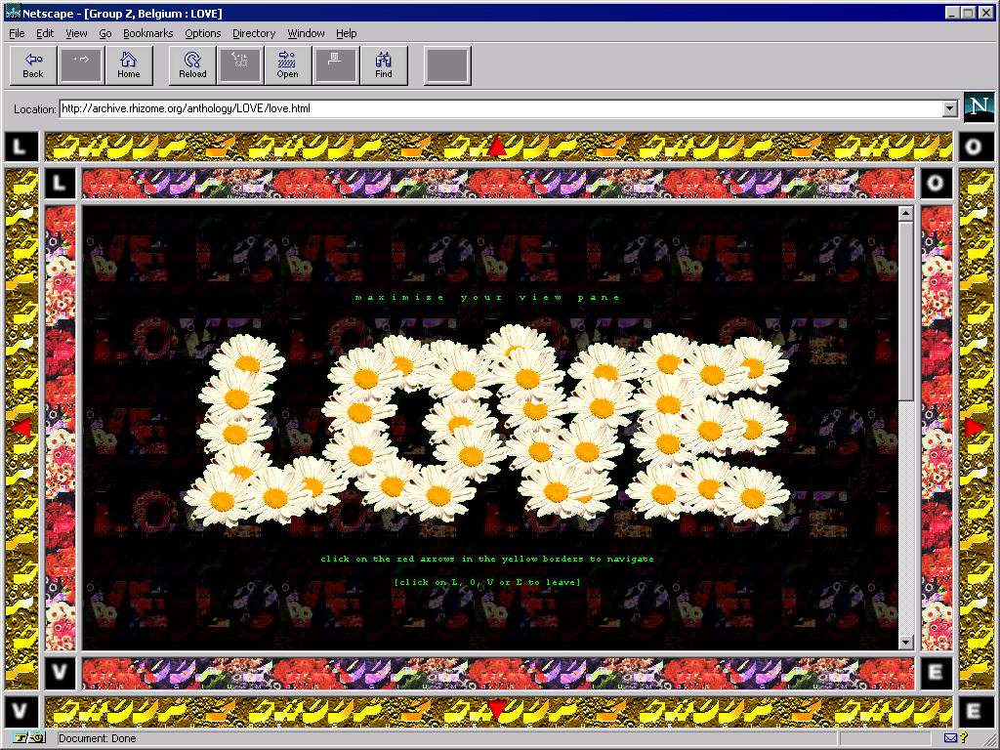

Developed for Netscape 2, LOVE is a series of seven stories arranged in a navigable grid of HTML files. Images, text, and interactive compositions map a range of experiences associated with romantic love, from innocent longing to polymorphous perversion to bitter loss. The user navigates the work via a nonlinear path, but the work retains a loose narrative arc nevertheless.
With its lyrical, expressive vignettes arranged in a precise grid, LOVE exemplifies the structural possibilities afforded by the web. In a seeming paradox, the standardization that is characteristic of the computer and the network continuously opens up new spaces for improvisation and experimentation, for emotional experience, and for artistic play.
Note: this work includes some explicit imagery.

“THE NET IS A VERY INTIMATE MEDIUM. PROBABLY BECAUSE COMMUNICATION IS ALWAYS ONE TO ONE: THERE'S ALWAYS ONE USER IN FRONT OF HIS OR HER COMPUTER LOOKING AT ONE PAGE.”